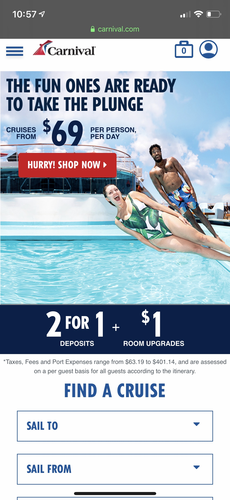
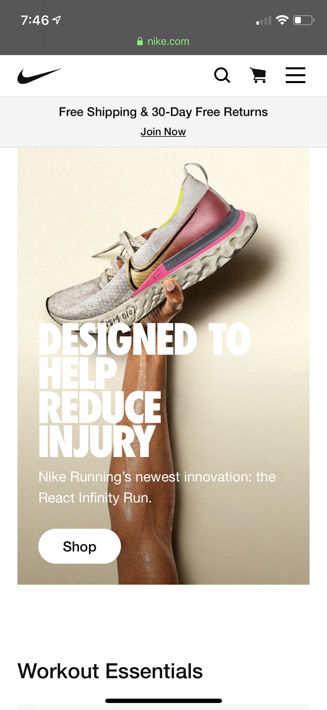

Rule of Thirds

Carnival Cruise line's mobile site makes great use of the Rule of Thirds
in several areas.
Below are a few examples:
Hurry! SHOP NOW
located at intersection of the upper-left line- People falling into pool located on right vertical line
- Advertised 2 for 1 deal located on lower horizontal line
Contrast

Levi's mobile site makes great use of Contrast in several areas.
Below are a few examples:
- Contrasting colors divide site into sections to make it easy to look at
- Red underlining of
Shop Men
andShop Women
draws attention to a call to action - Contrasting sizes of text create visual hierarchy
Alignment

Nike's mobile site makes great use of Alignment in several areas.
Below are a few examples:
- All text is left-aligned
- Toe and heel of shoe aligned with borders of text
- Call to action
Shop
button left-aligned with text